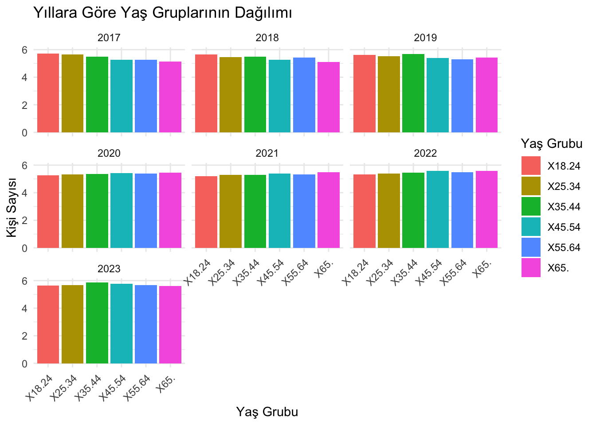
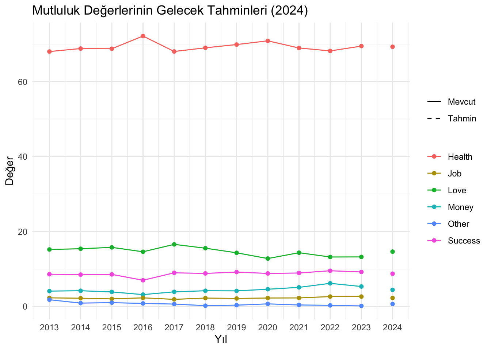

library(readxl)
#library(dplyr)
suppressPackageStartupMessages(library(dplyr))
library(ggplot2)
library(tidyr)
#data <- read_excel("../muy665-bahar2024-takim-team_a/veri1.xls", col_names = TRUE)
data <- suppressMessages(suppressWarnings(
read_excel("../muy665-bahar2024-takim-team_a/veri1.xls")
))
head(data)# A tibble: 6 × 8
Cinsiyet, yaş grubu …¹ ...2 ...3 ...4 ...5 ...6 ...7 ...8
<chr> <dbl> <dbl> <dbl> <dbl> <dbl> <dbl> <dbl>
1 Level of life satisfa… NA NA NA NA NA NA NA
2 <NA> NA NA NA NA NA NA NA
3 <NA> 2017 2018 2019 2020 2021 2022 2023
4 Toplam-Total 5.44 5.41 5.51 5.36 5.33 5.47 5.72
5 Erkek-Male 5.41 5.34 5.46 5.27 5.19 5.42 5.64
6 Kadın-Female 5.48 5.47 5.55 5.45 5.46 5.51 5.79
# ℹ abbreviated name:
# ¹`Cinsiyet, yaş grubu ve eğitim duruma göre yaşam memnuniyet düzeyi(1), 2017-2023`# Print the data to check the columns
print(data)# A tibble: 24 × 8
Cinsiyet, yaş grubu ve eğit…¹ ...2 ...3 ...4 ...5 ...6 ...7
<chr> <dbl> <dbl> <dbl> <dbl> <dbl> <dbl>
1 Level of life satisfaction(1… NA NA NA NA NA NA
2 <NA> NA NA NA NA NA NA
3 <NA> 2017 2018 2019 2020 2021 2022
4 Toplam-Total 5.44 5.41 5.51 5.36 5.33 5.47
5 Erkek-Male 5.41 5.34 5.46 5.27 5.19 5.42
6 Kadın-Female 5.48 5.47 5.55 5.45 5.46 5.51
7 Yaş grubu-Age group NA NA NA NA NA NA
8 18-24 5.73 5.65 5.61 5.25 5.18 5.32
9 25-34 5.64 5.46 5.52 5.33 5.29 5.38
10 35-44 5.48 5.49 5.70 5.36 5.29 5.44
# ℹ 14 more rows
# ℹ abbreviated name:
# ¹`Cinsiyet, yaş grubu ve eğitim duruma göre yaşam memnuniyet düzeyi(1), 2017-2023`
# ℹ 1 more variable: ...8 <dbl># Belirli satır ve sütunlardan veri çıkar
# 2017 - 2022 yıllarını 4. sıradan itibaren çıkar
years <- as.numeric(data[3, 2:8])
# Toplam skorları 5. sıradan itibaren çıkar
total <- as.numeric(data[4, 2:8])
# Erkek skorlarını 6. sıradan itibaren çıkar
male <- as.numeric(data[5, 2:8])
# Kadın skorlarını 7. sıradan itibaren çıkar
female <- as.numeric(data[6, 2:8])
# Verileri bir veri çerçevesinde birleştir
plot_data <- data.frame(
year = rep(years, 3),
score = c(total, male, female),
group = rep(c("Total", "Male", "Female"), each = length(years))
)
# Print the combined data to verify
print(plot_data) year score group
1 2017 5.443134 Total
2 2018 5.405084 Total
3 2019 5.508451 Total
4 2020 5.362456 Total
5 2021 5.325915 Total
6 2022 5.465793 Total
7 2023 5.716854 Total
8 2017 5.408476 Male
9 2018 5.336702 Male
10 2019 5.460921 Male
11 2020 5.272090 Male
12 2021 5.186300 Male
13 2022 5.416810 Male
14 2023 5.637573 Male
15 2017 5.476967 Female
16 2018 5.471594 Female
17 2019 5.554633 Female
18 2020 5.450665 Female
19 2021 5.462006 Female
20 2022 5.513587 Female
21 2023 5.794213 Female# Visualize data separated by years with x-axis as total, male, and female, and y-axis as percentage
ggplot(plot_data, aes(x = group, y = score, fill = group)) +
geom_bar(stat = "identity", position = "dodge") +
facet_wrap(~ year) +
labs(
title = "Yıllara Göre Mutluluk Oranları",
x = "Cinsiyetler",
y = "Verilen Puan",
fill = "Cinsiyetler"
) +
theme_minimal()# Show trends for total, male, and female scores over the years
ggplot(plot_data, aes(x = year, y = score, color = group)) +
geom_line() +
geom_point() +
labs(
title = "Yıllara Göre Mutluluk Trendleri",
x = "Yıllar",
y = "Puan",
color = "Group"
) +
theme_minimal()# Predict the values for the year 2024 using linear regression
lm_total <- lm(score ~ year, data = plot_data %>% filter(group == "Total"))
lm_male <- lm(score ~ year, data = plot_data %>% filter(group == "Male"))
lm_female <- lm(score ~ year, data = plot_data %>% filter(group == "Female"))
pred_2024 <- data.frame(
year = 2024,
group = c("Total", "Male", "Female"),
score = c(predict(lm_total, newdata = data.frame(year = 2024)),
predict(lm_male, newdata = data.frame(year = 2024)),
predict(lm_female, newdata = data.frame(year = 2024)))
)
# Print the predicted values for 2024
print(pred_2024) year group score
1 2024 Total 5.569675
2 2024 Male 5.470251
3 2024 Female 5.666681# Add predictions to the plot data
plot_data <- rbind(plot_data, pred_2024)
# Show trends including predictions for 2024
ggplot(plot_data, aes(x = year, y = score, color = group)) +
geom_line() +
geom_point() +
labs(
title = "Trend Tahminleri 2024 Yılı İçin",
x = "Yıllar",
y = "Puan",
color = "Group"
) +
theme_minimal()#yaşlar için age grouping
eighteen_twentyfour <- as.numeric(data[8, 2:8])
twentyfour_thirtyfour <- as.numeric(data[9, 2:8])
thirtyfive_fourtyfour <- as.numeric(data[10, 2:8])
fourtyfive_fiftyfour <- as.numeric(data[11, 2:8])
fiftyfive_sixtyfour <- as.numeric(data[12, 2:8])
sixtyfive_plus <- as.numeric(data[13, 2:8])
# Combine data into a data frame
plot_data <- data.frame(
year = rep(years, 6),
score = c(eighteen_twentyfour, twentyfour_thirtyfour, thirtyfive_fourtyfour, fourtyfive_fiftyfour, fiftyfive_sixtyfour, sixtyfive_plus),
group = rep(c("eighteen_twentyfour", "twentyfour_thirtyfour", "thirtyfive_fourtyfour", "fourtyfive_fiftyfour", "fiftyfive_sixtyfour", "sixtyfive_plus"), each = length(years))
)
# Print the combined data to verify
print(plot_data) year score group
1 2017 5.729038 eighteen_twentyfour
2 2018 5.647126 eighteen_twentyfour
3 2019 5.612583 eighteen_twentyfour
4 2020 5.250375 eighteen_twentyfour
5 2021 5.180982 eighteen_twentyfour
6 2022 5.320093 eighteen_twentyfour
7 2023 5.642013 eighteen_twentyfour
8 2017 5.638099 twentyfour_thirtyfour
9 2018 5.460775 twentyfour_thirtyfour
10 2019 5.520363 twentyfour_thirtyfour
11 2020 5.329774 twentyfour_thirtyfour
12 2021 5.290100 twentyfour_thirtyfour
13 2022 5.375487 twentyfour_thirtyfour
14 2023 5.667695 twentyfour_thirtyfour
15 2017 5.483639 thirtyfive_fourtyfour
16 2018 5.485083 thirtyfive_fourtyfour
17 2019 5.695773 thirtyfive_fourtyfour
18 2020 5.356635 thirtyfive_fourtyfour
19 2021 5.292847 thirtyfive_fourtyfour
20 2022 5.442748 thirtyfive_fourtyfour
21 2023 5.872121 thirtyfive_fourtyfour
22 2017 5.249687 fourtyfive_fiftyfour
23 2018 5.256772 fourtyfive_fiftyfour
24 2019 5.397766 fourtyfive_fiftyfour
25 2020 5.420165 fourtyfive_fiftyfour
26 2021 5.388164 fourtyfive_fiftyfour
27 2022 5.584310 fourtyfive_fiftyfour
28 2023 5.770205 fourtyfive_fiftyfour
29 2017 5.272736 fiftyfive_sixtyfour
30 2018 5.416125 fiftyfive_sixtyfour
31 2019 5.304563 fiftyfive_sixtyfour
32 2020 5.375869 fiftyfive_sixtyfour
33 2021 5.338762 fiftyfive_sixtyfour
34 2022 5.497095 fiftyfive_sixtyfour
35 2023 5.673068 fiftyfive_sixtyfour
36 2017 5.138455 sixtyfive_plus
37 2018 5.092977 sixtyfive_plus
38 2019 5.430287 sixtyfive_plus
39 2020 5.449703 sixtyfive_plus
40 2021 5.487570 sixtyfive_plus
41 2022 5.593710 sixtyfive_plus
42 2023 5.601698 sixtyfive_plus# Verilerin birleştirilmesi
age_data <- data.frame(
year = years,
`18-24` = eighteen_twentyfour,
`25-34` = twentyfour_thirtyfour,
`35-44` = thirtyfive_fourtyfour,
`45-54` = fourtyfive_fiftyfour,
`55-64` = fiftyfive_sixtyfour,
`65+` = sixtyfive_plus
)
# Veriyi uzun formata dönüştürme
age_data_long <- pivot_longer(age_data, cols = -year, names_to = "age_group", values_to = "count")
# Çizgi grafiği oluşturma
ggplot(age_data_long, aes(x = year, y = count, color = age_group)) +
geom_line() +
geom_point() +
labs(title = "Yaş Gruplarının Yıllara Göre Dağılımı", x = "Yıl", y = "Kişi Sayısı", color = "Yaş Grubu") +
scale_x_continuous(breaks = years) +
theme_minimal()# Histogram grafiği oluşturma
ggplot(age_data_long, aes(x = year, y = count, fill = age_group)) +
geom_histogram(stat = "identity", position = "dodge") +
labs(title = "Yıllara Göre Yaş Gruplarının Dağılımı", x = "Yıl", y = "Kişi Sayısı", fill = "Yaş Grubu") +
scale_x_continuous(breaks = years) +
theme_minimal()Warning in geom_histogram(stat = "identity", position = "dodge"): Ignoring
unknown parameters: `binwidth`, `bins`, and `pad`# Histogram grafiği oluşturma (facet_wrap ile)
ggplot(age_data_long, aes(x = age_group, y = count, fill = age_group)) +
geom_bar(stat = "identity", position = "dodge") +
labs(title = "Yıllara Göre Yaş Gruplarının Dağılımı", x = "Yaş Grubu", y = "Kişi Sayısı", fill = "Yaş Grubu") +
facet_wrap(~ year) +
theme_minimal() +
theme(axis.text.x = element_text(angle = 45, hjust = 1))
# Mutluluk kaynağı değeri olanlar
#data1 <- read_excel("../muy665-bahar2024-takim-team_a/veri2.xls")
data1 <- suppressMessages(suppressWarnings(
read_excel("../muy665-bahar2024-takim-team_a/veri2.xls")
))
head(data1)# A tibble: 6 × 13
Mutluluk kaynağı, 201…¹ ...2 ...3 ...4 ...5 ...6 ...7 ...8 ...9
<chr> <chr> <dbl> <dbl> <dbl> <dbl> <dbl> <dbl> <dbl>
1 "Source of happiness, … <NA> NA NA NA NA NA NA NA
2 <NA> <NA> NA NA NA NA NA NA NA
3 <NA> <NA> 2013 2014 2015 2016 2017 2018 2019
4 "Mutluluk kaynağı olan… <NA> NA NA NA NA NA NA NA
5 <NA> Tüm … 73 73.3 72.3 70.2 70.6 74.2 74.1
6 <NA> Çocu… 12.9 13.4 13.1 15.1 14.3 12.9 12.8
# ℹ abbreviated name: ¹`Mutluluk kaynağı, 2013-2023`
# ℹ 4 more variables: ...10 <dbl>, ...11 <dbl>, ...12 <dbl>, ...13 <chr># Print the data to check the columns
print(data1)# A tibble: 22 × 13
Mutluluk kaynağı, 2013-…¹ ...2 ...3 ...4 ...5 ...6 ...7 ...8
<chr> <chr> <dbl> <dbl> <dbl> <dbl> <dbl> <dbl>
1 "Source of happiness, 20… <NA> NA NA NA NA NA NA
2 <NA> <NA> NA NA NA NA NA NA
3 <NA> <NA> 2013 2014 2015 2016 2017 2018
4 "Mutluluk kaynağı olan k… <NA> NA NA NA NA NA NA
5 <NA> Tüm … 73 73.3 72.3 70.2 70.6 74.2
6 <NA> Çocu… 12.9 13.4 13.1 15.1 14.3 12.9
7 <NA> Eş-S… 5.2 5 5.31 4.73 5.35 3.62
8 <NA> Anne… 2.9 3.1 2.76 3.64 3.19 2.73
9 <NA> Kend… 2.5 1.9 2.75 2.71 3.42 3.33
10 <NA> Toru… 1.7 1.4 1.88 1.92 1.89 1.82
# ℹ 12 more rows
# ℹ abbreviated name: ¹`Mutluluk kaynağı, 2013-2023`
# ℹ 5 more variables: ...9 <dbl>, ...10 <dbl>, ...11 <dbl>, ...12 <dbl>,
# ...13 <chr># Extract years for years 2013 to 2023
years1 <- as.numeric(data1[3, 3:13])
# Extract health for years 2013 to 2023
saglik <- as.numeric(data1[13, 3:13])
# Extract love for years 2013 to 2023
sevgi <- as.numeric(data1[14, 3:13])
# Extract success for years 2013 to 2023
basari <- as.numeric(data1[15, 3:13])
# Extract money for years 2013 to 2023
para <- as.numeric(data1[16, 3:13])
# Extract job for years 2013 to 2023
is <- as.numeric(data1[17, 3:13])
# Extract other for years 2013 to 2023
diger <- as.numeric(data1[18, 3:13])
#yeni kısım
# Create a long-format data frame
plot_data <- data.frame(
year = rep(years1, 6),
topic = rep(c("Health", "Love", "Success", "Money", "Job", "Other"), each = length(years1)),
value = c(saglik, sevgi, basari, para, is, diger)
)
# Print the combined data to verify
print(plot_data) year topic value
1 2013 Health 68.0000000
2 2014 Health 68.8000000
3 2015 Health 68.7530000
4 2016 Health 72.1380000
5 2017 Health 68.0179285
6 2018 Health 68.9990000
7 2019 Health 69.8648423
8 2020 Health 70.8584691
9 2021 Health 68.9505817
10 2022 Health 68.1679400
11 2023 Health 69.4519821
12 2013 Love 15.2000000
13 2014 Love 15.4000000
14 2015 Love 15.7640000
15 2016 Love 14.5910000
16 2017 Love 16.5642914
17 2018 Love 15.5418000
18 2019 Love 14.3171221
19 2020 Love 12.7836121
20 2021 Love 14.3428574
21 2022 Love 13.1965900
22 2023 Love 13.2200296
23 2013 Success 8.6000000
24 2014 Success 8.5000000
25 2015 Success 8.5580000
26 2016 Success 6.9950000
27 2017 Success 8.9768234
28 2018 Success 8.8152000
29 2019 Success 9.1735485
30 2020 Success 8.8100069
31 2021 Success 8.9268787
32 2022 Success 9.5298010
33 2023 Success 9.2084356
34 2013 Money 4.1000000
35 2014 Money 4.2000000
36 2015 Money 3.8790000
37 2016 Money 3.1640000
38 2017 Money 3.9045409
39 2018 Money 4.1962900
40 2019 Money 4.1612886
41 2020 Money 4.5950137
42 2021 Money 5.0980588
43 2022 Money 6.1699240
44 2023 Money 5.3248059
45 2013 Job 2.3000000
46 2014 Job 2.2000000
47 2015 Job 2.0280000
48 2016 Job 2.2990000
49 2017 Job 1.8975148
50 2018 Job 2.2394900
51 2019 Job 2.1347070
52 2020 Job 2.2580617
53 2021 Job 2.2815553
54 2022 Job 2.6397800
55 2023 Job 2.6406056
56 2013 Other 1.8000000
57 2014 Other 0.9000000
58 2015 Other 1.0180000
59 2016 Other 0.8130000
60 2017 Other 0.6389012
61 2018 Other 0.2082200
62 2019 Other 0.3484915
63 2020 Other 0.6948366
64 2021 Other 0.4000681
65 2022 Other 0.2959660
66 2023 Other 0.1541411# Function to create pie chart for a specific year with percentage labels
create_pie_chart <- function(year_data) {
year_data <- year_data %>%
mutate(percentage = value / sum(value) * 100) %>%
mutate(label = paste0(topic, ": ", round(percentage, 1), "%"))
ggplot(year_data, aes(x = "", y = value, fill = topic)) +
geom_bar(stat = "identity", width = 1) +
coord_polar(theta = "y") +
labs(title = paste("Distribution of Topics in", unique(year_data$year)),
x = NULL, y = NULL, fill = "Topic") +
theme_void() +
theme(legend.position = "bottom") +
geom_text(aes(label = label), position = position_stack(vjust = 0.5))
}
# Loop through each year and create pie charts
for (year in unique(plot_data$year)) {
year_data <- plot_data %>% filter(year == !!year)
pie_chart <- create_pie_chart(year_data)
print(pie_chart)
}# Trend Analizi
# Show line plots for each topic to visualize changes over the years
ggplot(plot_data, aes(x = year, y = value, color = topic)) +
geom_line() +
geom_point() +
scale_x_continuous(breaks = years1) + # Ensure x-axis shows only whole years
labs(
title = "Trend Analizi",
x = "Yıllar",
y = "Değer",
color = "Topic"
) +
theme_minimal()# Lineer model oluşturma
lm_model <- lm(value ~ year + topic, data = plot_data)
# 2024 yılı için tahmin
future_year_2024 <- data.frame(
year = rep(2024, 6),
topic = c("Health", "Love", "Success", "Money", "Job", "Other")
)
# Tahminleri hesapla
predictions_2024 <- predict(lm_model, newdata = future_year_2024)
# Tahminleri veri çerçevesine ekle
future_predictions_2024 <- cbind(future_year_2024, value = predictions_2024)
# Tahmin sonuçlarını yazdır
print(future_predictions_2024) year topic value
1 2024 Health 69.2728858
2 2024 Love 14.6292094
3 2024 Success 8.7357904
4 2024 Money 4.4357202
5 2024 Job 2.2653377
6 2024 Other 0.6610568# Mevcut verilerle birlikte tahminleri birleştirme
combined_data <- rbind(plot_data, future_predictions_2024)
# Görselleştirme
ggplot(combined_data, aes(x = year, y = value, color = topic, linetype = factor(year == 2024))) +
geom_line() +
geom_point() +
scale_linetype_manual(values = c("solid", "dashed"), labels = c("Mevcut", "Tahmin")) +
scale_x_continuous(breaks = c(years1, 2024)) + # X ekseninde tüm yılları göster
labs(title = "Mutluluk Değerlerinin Gelecek Tahminleri (2024)", x = "Yıl", y = "Değer", color = "Konu", linetype = "Durum") +
theme_minimal() +
theme(legend.title = element_blank())